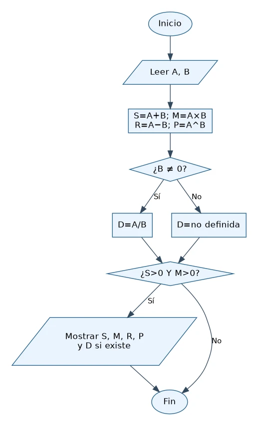
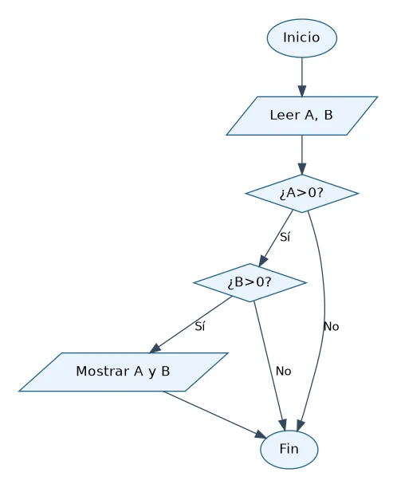
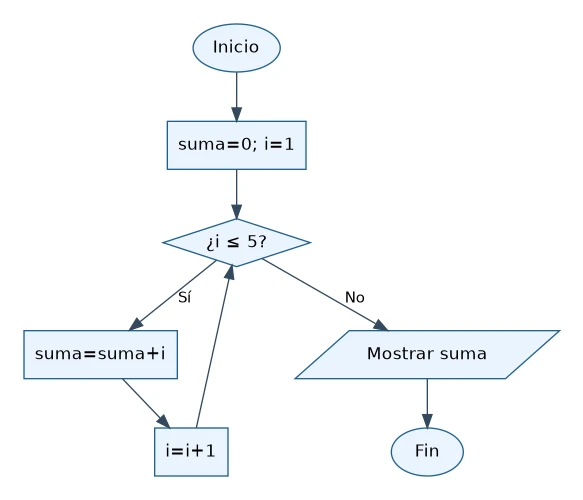
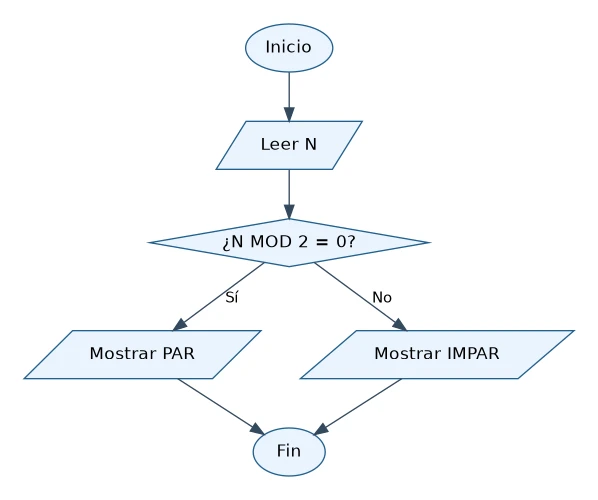
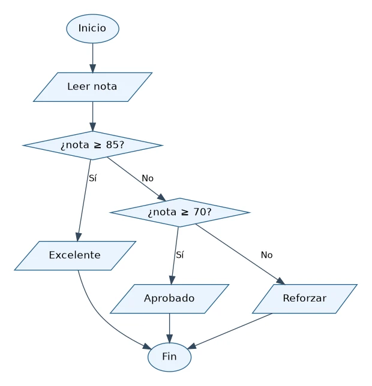
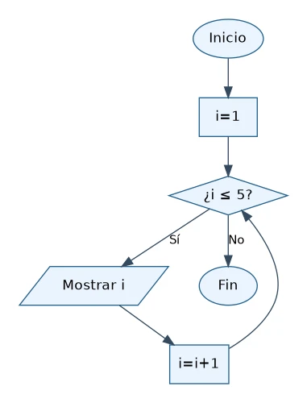
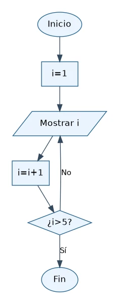

Ruta pedagógica
Lee la explicación, copia el diagrama en una hoja, ejecuta el ejemplo a mano y después practica sin ver la solución. Los diagramas son modelos visuales simplificados: dibuja las ramas Sí/No y los retornos de los ciclos cuando corresponda.
1. Algoritmo y diagrama de flujo
Un algoritmo es una secuencia finita y ordenada de instrucciones para resolver un problema. El diagrama de flujo representa esas instrucciones con figuras y flechas.
Ejercicio guiado: Escribe: Inicio → Leer A y B → Sumar → Mostrar resultado → Fin.
Ver diagrama de referencia

Esquema didáctico: completa en tu hoja las ramas de decisiones y retornos de bucles.
2. Figuras de los diagramas
Óvalo: inicio y fin. Paralelogramo: leer o mostrar. Rectángulo: cálculos o asignaciones. Rombo: pregunta de Sí/No. Flechas: dirección.
Ejercicio guiado: Dibuja cada figura y anota un ejemplo.
Ver diagrama de referencia

Esquema didáctico: completa en tu hoja las ramas de decisiones y retornos de bucles.
3. Variables, constantes, contador y acumulador
Variable: valor que puede cambiar. Constante: valor fijo. Contador: aumenta o disminuye en una cantidad usualmente fija. Acumulador: guarda un total que se actualiza, por ejemplo suma=suma+nota.
Ejercicio guiado: Inicia total=0 y suma 4, 7 y 9: total=20.
Ver diagrama de referencia

Esquema didáctico: completa en tu hoja las ramas de decisiones y retornos de bucles.
4. Operadores y tipos de datos
Aritméticos: +, -, *, /, DIV (cociente entero), MOD (residuo), potencia. Relacionales: >, <, >=, <=, ==, !=. Lógicos: AND, OR, NOT. Booleano: verdadero/falso. Carácter: un símbolo.
Ejercicio guiado: 17 MOD 5=2; 17 DIV 5=3; 2^3=8.
Ver diagrama de referencia

Esquema didáctico: completa en tu hoja las ramas de decisiones y retornos de bucles.
5. Condicional simple, doble y anidada
Simple: si se cumple, ejecuta. Doble: si/si no. Anidada: una condición dentro de otra. Para dos positivos, usa A>0 Y B>0.
Ejercicio guiado: Prueba A=3, B=-2: no se imprimen ambos.
Ver diagrama de referencia

Esquema didáctico: completa en tu hoja las ramas de decisiones y retornos de bucles.
6. Bucle FOR
Se usa cuando se conoce la cantidad de repeticiones. Inicia contador, comprueba límite y avanza.
Ejercicio guiado: Para i desde 1 hasta 5: sumar i produce 15.
Ver diagrama de referencia
Esquema didáctico: completa en tu hoja las ramas de decisiones y retornos de bucles.
7. Bucle WHILE
Comprueba la condición ANTES de ejecutar. Puede realizar cero repeticiones. Debe actualizarse la variable para evitar ciclos infinitos.
Ejercicio guiado: i=1; mientras i<=5: mostrar i; i=i+1.
Ver diagrama de referencia

Esquema didáctico: completa en tu hoja las ramas de decisiones y retornos de bucles.
8. Bucle REPEAT / DO WHILE
Ejecuta el cuerpo ANTES de evaluar la condición; por eso se ejecuta al menos una vez. REPEAT UNTIL termina cuando la condición es verdadera; DO WHILE repite mientras es verdadera.
Ejercicio guiado: Repetir: mostrar i; i=i+1; hasta i>5.
Ver diagrama de referencia

Esquema didáctico: completa en tu hoja las ramas de decisiones y retornos de bucles.
9. Pares e impares con MOD
Un entero es par cuando N MOD 2 = 0; en caso contrario es impar. Para sumar pares o impares, usa un acumulador iniciado en cero.
Ejercicio guiado: Leer N; si N MOD 2=0 mostrar Par; si no, Impar.
Ver diagrama de referencia
Esquema didáctico: completa en tu hoja las ramas de decisiones y retornos de bucles.
10. Cómo elaborar un diagrama de flujo en papel
Escenario: mostrar dos números únicamente si ambos son positivos
Una profesora solicita un diagrama que lea dos números y los muestre solamente cuando los dos sean mayores que cero. Si alguno es cero o negativo, no debe mostrar los números.
Pasos para resolverlo en una hoja
- Comprenda el problema. Se ingresan dos números (A y B). La salida serán A y B, pero únicamente cuando ambos sean positivos.
- Identifique las variables. Escriba A y B como variables numéricas. No necesita un contador ni un acumulador para este problema.
- Dibuje el Inicio. Utilice un óvalo con la palabra «Inicio».
- Lea los datos. Dibuje un paralelogramo con «Leer A, B» y conéctelo con una flecha desde Inicio.
- Compruebe el primer número. Dibuje un rombo con «¿A > 0?». En la rama «No», vaya directamente a Fin.
- Compruebe el segundo número. Desde la rama «Sí» del primer rombo, dibuje otro rombo con «¿B > 0?». Su rama «No» también conduce a Fin.
- Muestre el resultado. Desde la rama «Sí» del segundo rombo, dibuje un paralelogramo «Mostrar A, B».
- Termine el diagrama. Conecte la salida y ambas ramas «No» a un óvalo «Fin». Evite flechas sueltas.
- Compruebe su solución. Pruebe A=3 y B=6: se muestran ambos; A=3 y B=-2: no se muestran; A=0 y B=5: tampoco se muestran.
Consejo: el rombo contiene una pregunta, no una asignación. Cada decisión debe tener sus ramas «Sí» y «No».
Ver diagrama de referencia
Utilice la imagen como apoyo visual. Compare especialmente que ambas condiciones tengan sus rutas Sí/No y que solo se muestren los números cuando ambas sean verdaderas.